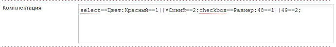
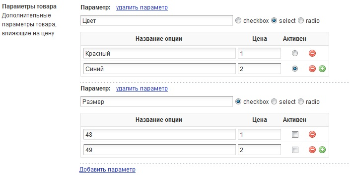

Сниппет, модуль, плагин для создания корзины заказов на сайте. Разработка - Тельный Сергей (privat_tel@mail.ru), спасибо Матюхину Максиму (matuhinmax@mail.ru), Александру Полякову (lecosson@gmail.com). По всем замечаниям и вопросам пишите на privat_tel@mail.ru или в скайп Sergey22.
Официальный сайт: http://tsvshop.tsv.org.ua, http://tsvshop.xyz
Теперь список всех изменений будет доступен на странице проекта GitHub https://github.com/Serg28/tsvshop/releases
Версия V5.3
Эти нововведения были отражены в документации к чанкам: http://tsvshop.tsv.org.ua/dokumentacziya/dlya-veb-masterov/chanki-plejsxolderyi/ и в подсказках, выводимых при редактировании чанков (плагином HINTx).
Версия V5.2.2
Версия V5.2.1 rc2
Список изменений в процессе подготовки
Версия V5.0 rc
Версия V4.9.1 rc
ВАЖНО! Этот вариант установки можно делать ТОЛЬКО на уже установленный MODx. Поэтому прежде чем вы последуете нижеприведенным шагам, установите сначала MODx обычным способом.
После этого делаем следующее:
Видеоинструкция установки: http://tsvshop.tsv.org.ua/dokumentacziya/dlya-veb-masterov/ustanovka-modulya.html
[!TSVshop? &act=`basket` &checkid=``!] – где checkid – ИД страницы оформления покупки;[!TSVshop? &act=`checkout` &backid=``!] – где backid – ИД страницы, куда переход после успешной покупки;[!TSVshop? &act=`finish`!]
[!TSVshop? &act=`itemcard`!]
<form action="" method="post" name="Tovar[*id*]" id="Tovar[*id*]" >
[+tsvoptions+]
Цена: [+tsvprice+] руб.
<p><input type="text" name="qty" value="1" [+tsvbattr+] /></p>
<a href="javascript: void(0);" onclick="AddToCart('[*id*]');return false">В корзину</a>
[+tsvservices+]
</form>
Обратите внимание, что обязательно наличие вызова сниппета [!TSVshop? &act=`itemcard`!], поскольку с его помощью идет обработка плейсхолдеров [+tsvoptions+], [+tsvprice+], [+tsvbattr+] и [+tsvservices+] (это системные плейсхолдеры, вместо которых выводится служебная информация). Также при вызове [!TSVshop? &act=`itemcard`!] срабатывает событие TSVshopOnViewItemCard, которое можно повесить на плагин для обработки карточки товара или для подсчета просмотров товара.
Данный вид установки довольно трудоемкий, поскольку нужно проделать много рутинной работы. Поэтому крайне желательно воспользоваться автоматической установкой. Но если вы все же решили установить TSVshop вручную, то сделайте следующее:
[!TSVshop? &act=`basket` &checkid=`` &namesource=`` &tplcart=`имя_чанка_или_путь_к_файлу` &tplcartempty=`имя_чанка_или_путь_к_файлу` !] – где checkid – ИД страницы оформления покупки; &namesource=`` - поле документа, откуда брать название товара, напр., longtitle, pagetitle, menutitle. По умолчанию - pagetitle; &tplcart=`` - имя чанка или путь к файлу (напр., @FILE:путь_от_корня_сайта/имя_файла) с шаблоном корзины. По умолчанию чанк Shop_Cart. То же касается и &tplcartempty=`` - чанк или файл корзины, когда она пуста. По умолчанию чанк Shop_Cart_Empty[!TSVshop? &act=`checkout` &backid=`` &tplcheckout=`имя_чанка_или_путь_к_файлу` &tpluserform=`имя_чанка`!] – где backid – ИД страницы, куда переход после успешной покупки; &tplcheckout=`` - имя чанка или путь к файлу (напр., @FILE:путь_от_корня_сайта/имя_файла) с шаблоном корзины. По умолчанию чанк Shop_Checkout; &tpluserform=`` - имя чанка с шаблоном формы оформления заказа (поддерживается ТОЛЬКО чанки). По умолчанию - Shop_UserForm[!TSVshop? &act=`finish` &tplsuccess=`имя_чанка_или_путь_к_файлу` &tplmailadmin=`имя_чанка_или_путь_к_файлу` &tplmailklient=`имя_чанка_или_путь_к_файлу` &tplmailupdateorder=`имя_чанка_или_путь_к_файлу`!] где &tplsuccess=`` - чанк или файл с шаблоном сообщения об успешном оформлении заказа, по умолчанию чанк Shop_FinishText; &tplmailadmin=`` - чанк или файл с шаблоном письма админу с информацией о новом заказе, по умолчанию чанк Shop_mail_admin; &tplmailklient=`` - чанк или файл шаблона письма клиенту с информацией о его заказе, по умолчанию чанк Shop_mail_klient; &tplmailupdateorder=`` - чанк или файл шаблона письма клиенту об изменении статуса его заказа (при смене статуса), по умолчанию чанк Shop_UpdateOrder. В качестве шаблона можно использовать файл: @FILE:путь_от_корня_сайта/имя_файла[[TSVshop? &act=`none`]] – это касается только той страницы, где ни разу не вызывался сниппет TSVshop. Этот вызов вставит в код страницы служебные скрипты, необходимые для работы корзины. На странице корзины, оформления и завершения покупки, а также там, где есть хотя-бы один вызов сниппета TSVshop, этот вызов не делать;[[TSVshop? &act=`info` &basketid=`` &hideon=`` &tplinfoblock=`имя_чанка_или_путь_к_файлу`]] – где baskeid – ИД страницы с корзиной; &hideon=`` - список ID документов (через запятую), на которых инфоблок не будет отображаться (будет скрыт); &tplinfoblock=``- имя чанка или путь к файлу (напр., @FILE:путь_от_корня_сайта/имя_файла) с шаблоном инфоблока. По умолчанию чанк Shop_Infoblock.[[Ditto? &language=`russian` &tpl=`product` &sortDir=`ASC` &extenders=`shop`]] – это выведет продукцию с кнопкой «В корзину». ОБРАТИТЕ ВНИМАНИЕ! В вызове Ditto при выводе списка товаров магазина указан параметр &extenders=`shop` - его присутствие обязательно. С его помощью идет обработка чанка product. Без этого параметра добавление в корзину работать не будет.
[!TSVshop? &act=`itemcard`!]
<form action="" method="post" name="Tovar[*id*]" id="Tovar[*id*]" >
[+tsvoptions+]
Цена: [+tsvprice+] руб.
<p><input type="text" name="qty" value="1" [+tsvbattr+] /></p>
<a href="javascript: void(0);" onclick="AddToCart('[*id*]');return false">В корзину</a>
[+tsvservices+]
</form>
Обратите внимание, что обязательно наличие вызова сниппета [!TSVshop? &act=`itemcard`!], поскольку с его помощью идет обработка плейсхолдеров [+tsvoptions+], [+tsvprice+], [+tsvbattr+] и [+tsvservices+] (это системные плейсхолдеры, вместо которых выводится служебная информация). Также при вызове [!TSVshop? &act=`itemcard`!] срабатывает событие TSVshopOnViewItemCard, которое можно повесить на плагин для обработки карточки товара или для подсчета просмотров товара.
Как писалось в разделе установки, существует екстендер shop, предназначенный для обработки служебных плейсхолдеров сниппета. Его нужно вызвать при выводе товаров с помощью Ditto, чтобы получилось &extenders=`shop`. Кроме того, начиная с версии 4.8 rc модуля, функции экстендера расширены. (для ранних версий был отдельный экстендер sortprice). Добавлена возможность сортировки товаров по цене или дополнительным параметрам товара. Данный экстендер добавляет к Ditto 2 новых параметра: sortDirPrice и sortByPrice.
sortByPrice - поле для сортировки: price (по цене) или param (по доп. параметрам)
sortDirPrice - порядок сортировки: ASC (по возрастанию) или DESC (по убыванию)
Например, нам нужно отсортировать все товары по цене в порядке убывания. Но поскольку цена может быть в виде формулы, напр., 1-10==100||90, то Ditto не сможет корректно отсортировать товары по цене. В таком случае делаем вызов:
[[Ditto? &tpl=`product` &sortDir=`ASC` &extenders=`shop` &sortByPrice=`price` &sortDirPrice=`DESC`]]
и все товары будут отсортированы по цене в порядке убывания
Если же, например, у товаров есть дополнительный параметр Диаметр (с помощью плагина TSVsparam), и у каждого диаметра есть своя цена, а нам нужно отсортировать товары не по основной цене, а по цене диаметра. В таком случае делаем вызов:
[[Ditto? &tpl=`product` &sortDir=`ASC` &extenders=`shop` &sortByPrice=`param` &sortDirPrice=`DESC`]]
и все товары будут отсортированы по цене диаметра в порядке убывания. Причем если у товара один из диаметоров будет активным, будет учитываться именно он, в противном случае учитывается первый по счету диаметр
Также с помощью данного екстендера можно выводить разные цены в зависимости от того, к какой веб-группе относится авторизованный пользователь. Например, у вас есть 3 группы пользователей с названиями group1, group2, group2, для которых нужно показывать разные цены. Для этого нужно создать в Карточке товара дополнительно 3 TV-параметра с ценами для каждой из групп (помимо имеющегося price, в котором идет обычная цена для всех остальных), например, tvprice1, tvprice2, tvprice3
Затем в вызове Ditto воспользуемся новым параметром >p=``. Достаточно в него добавить простую конфигурацию, которая решит нашу задачу: >p=`group1=tvprice1;group2=tvprice2;group3=tvprice3`. Как видно, мы просто вписали наши группы и соответсвующие им TV с ценой для этих групп по такому принципу: имявебгруппы1=имяtvсценой1;имявебгруппы2=имяtvсценой2 с разделителем - точка с запятой.
В данной версии сниппета реализована очень удобная функция манипуляцией ценами. Теперь вы можете в качестве цены указать не только стоимость товара, но и несложную формулу, которая вычисляет стоимость товара в зависимости от количества заказанного товара.
Рассмотрим это на примере. Представим себе, что стоимость товара зависит напрямую от того, сколько единиц товара заказал клиент. Допустим, если заказать от 1 до 5 единиц товаров, то стоимость будет 100 рублей, если от 6 до 10 единиц, то 90, а если от 11 и более, то 80. Чтобы реализовать такую возможность, достаточно в поле Цена указать: 1-5==100||6-10==90||80. Значение 1 и 2 вариантов понятны, последний - это цена, которая применяется, если не соблюдается ни одно условие. Т.е. более 10 единиц товаров. Можно создавать неограниченное количество условий.
Из вышеприведенного примера видно, что принцип построения формулы довольно простой: ОТ1-ДО1==ЦЕНА1||ОТ2-ДО2==ЦЕНА2||ЦЕНА3. Это означает: Если заказать количество товара в промежутке ОТ1 до ДО1 штук, то цена будет ЦЕНА1, если ОТ2 до ДО2, то цена будет ЦЕНА2, если не соблюдается ни одно условие, то цена будет ЦЕНА3.
Итак, в поле Цена (TV-параметр price) можно указывать либо просто цену, либо формулу с условиями.
Вы можете задать для каждого товара дополнительные параметры, например, цвет, размер, объем. При этом каждый из параметров может влиять на общую стоимость товара: приплюсовываться, умножаться или вычитаться. А на странице товара или в списке товаров вы можете вывести эти параметры в виде выпадающего списка, радиокнопки, чекбокса.
Рассмотрим это на примере. Допустим, у товара "Ветровка" есть 2 дополнительных параметра: цвет (красный и синий) и размер (48, 50, 52). При выборе красного цвета цена увеличивается на 100 рублей, а при синем - становится на 20 рублей дешевле. Ну а при выборе любого из размеров цена никак не меняется. Чтобы это реализовать, существует сниппет TSVshop_options.
Сначала установим и настроим его - смотрите раздел УСТАНОВКА, пунткы 5 и 20. После установки и настройки в документе товара у нас будет еще один ТВ - tsvshop_param. При добавлении или редактирования товара в нем мы задаем параметры товара в таком виде:
Группа1; Группа2; …..;
Группы параметров разделяются точкой с запятой, а также точкой с запятой ставится после всех групп. Каждая из групп состоит из независимых виджетов.Тип==Название:Параметр1==Значение1||Параметр2==Значение2||...
Тип – Обязательный параметр, может принимать 3 значения:
Название - Не обязательный параметр, название группы параметров. Любой текст. Может быть пустым.
Параметр - Не обязательный параметр, название группы параметров. Любой текст. Может быть пустым. Если начинается с *, тогда этот пункт будет активным при загрузке страницы.
Значение - Обязательный параметр. Показывает как отразится на общей стоимости, если выбран данный пункт. Может иметь следующие значения:
Пример (первое значение пусто):==||Подарочная упаковка==35||Подарочная сумочка==50
Можно задать параметры со значением "0". Это полезно для параметров, которые не влияют на цену (например цвет). Пример: синий==0||зеленый==0||красный==0
Полный пример:
Данный плагин позволяет упростить добавление дополнительных параметров товаров. При его использовании отпадает необходимость вручную писать вышеприведенные формулы в TV tsvshop_param. Весь процесс добавления становится интуитивно понятным. Убедитесь сами:
Добавление доп. параметров без плагина:

Добавление доп. параметров с плагином:

Данный плагин платный, его цена составляет 5 WMZ, приобреести его на сайте http://tsvshop.tsv.org.ua/zagruzit/plaginyi/tsvsparam-dopolnitelnyie-parametryi-tovarov.html.
Используется совместно со сниппетом Ditto для вывода товаров из каталога. Минимальный код, который треубется для корректной работы чанка и добавления в корзину, следующий:
<form action="index.php" method="post" name="Tovar[+id+]" id="Tovar[+id+]">
[+tsvoptions+]
[+tsvprice+] руб.
<input type="number" name="qty" value="1" [+tsvbattr+] />
<a href="javascript: void(0);" onclick="AddToCart('[+id+]');return false">В корзину</a>
[+tsvservices+]
</form>
Вы можете редактировать чанк как желаете, главное, чтобы в вашем коде сохранились вышеприведенные плейсхолдеры, форма и ссылка на добавление товара в корзину. Их месторасположение в чанке не имеет значение, главное, чтобы они были внутри формы.
| Плейсхолдеры чанка product | |
| id="Tovar[+id+]" | наличие в теге form обязательно |
| [+tsvprice+] | Выводит окончательную стоимость товара на страницу. Выводимая этим плейсхолдером стоимость товара подсчитывается динамически, учитывая дополнительные параметры товара, скидки и т.д. Например, если у товара есть дополнительные параметры: цена, размер и т.д. и которые имеют свою цену, то при выборе определенного цвета окончательная сумма сразу же отображается вместо данного плейсхолдера. Смотрите пример использования в стандартном чанке product |
| [+tsvoptions+] | Выводит список дополнительных параметров товара: выпадающий список, checkbox, radiobutton. Смотрите пример использования в стандартном чанке product. Наличие в теге form обязательно, даже если не будут использоваться дополнительные параметры товаров. |
| [+cart_icon+] | Выводит ПУТЬ к картинке товара, которая будет отображаться в корзине. Используйте TV-параметр cart_icon. Используется в таком виде: <input type="hidden" name="cart_icon" value="[+cart_icon+]" />. Важно, что TV cart_icon должнен возвращать ПУТЬ к картинке, а не саму куртинку. Использование в чанке обязательно, даже если вы не планируете использовать картинку товара. Смотрите пример использования в стандартном чанке product |
| [+tsvservices+] | Служебный плейсхолдер, который выводит функции, необходимые для формирования окончательной цены товара. Использовать в чанке товара обязательно. Также он должен быть размещен в самом конце формы, после всех плейсхолдеров. Смотрите пример использования в стандартном чанке product |
| [+tsvbattr+] | Служебный плейсхолдер, который выводит дополнительные атрибуты для поля количества заказанного товара. Используется так: <input type="number" name="qty" value="1" [+tsvbattr+] />. В результате выводится: <input type="text" name="qty" value="1" onkeypress="return testKey(event)" onChange="UserCalc('[+id+]')" />. Если вы собираетесь использовать поле Количество, то этот плейсхолдер использовать обязательно. |
Предназначен для вывода корзины заказов при вызове [[TSVshop? &act=`basket`]]
| Плейсхолдеры чанка Shop_Cart | |
| [+shop.basket.iconpath+] | Путь к маленькому фото товара. Используйте TV-параметр cart_icon. Служит для вставки в тег img в атрибут src. Чтобы картинка стала доступной в корзине, нужно в чанке товара добавить скрытое поле с именем cart_icon, а в качестве значения вставить TV cart_icon. Например, <input type="hidden" name="cart_icon" value="[+cart_icon+]" />. Пример смотрите в стандартном чанке product. Важно, что TV cart_icon должнен возвращать ПУТЬ к картинке, а не саму куртинку. При отсутствии картинки в TV cart_icon подставляется картинка по-умолчанию: assets/snippets/tsvshop/images/noimage.png |
| [+shop.basket.num+] | Порядковый номер товара в корзине. Можно использовать для своих нужд, например, пронумеровать товары в корзине или для подстановки в вызовы функций: onChange="ChangeQuantity('[+shop.basket.num+]', 4);" (этот вызов отправит ajax- запрос, изменив кол-во текущего товара в корзине до 4 единиц) и т.д. |
| [+shop.basket.articul+] | Артикул товара |
| [+shop.basket.name+] | Наименование товара. Какое поле товара будет использоваться, можно установить параметром сниппета &namesource=``, напр., &namesource=`longtitle`. По умолчанию используется pagetitle |
| [+shop.basket.details+] | Дополнительные параметры товара |
| [+shop.basket.link+] | Адрес к странице с товаром. Используется для создания ссылки на страницу товара. |
| [+shop.basket.id+] | ID товара. Можно использовать на свое усмотрение. |
| [+shop.basket.monetary+] | Используемая валюта, например, руб., грн. Берется из языкового файла. |
| [+shop.basket.qinput+] | Выводит полностью сформированное поле Количество, которое в корзине используется для вывода количества заказанного товара. Это поле будет сформированно автоматически, со всеми нужными атрибутами. На выходе получится приблизительно следующее: <input type="text" size="3" name="q" value="1" onkeypress="return testKey(event)" onchange="ChangeQuantity(1, this.value);" > Внимание! Используйте данный вариант ТОЛЬКО при формировании корзины заказа в режиме basket (&act=`basket`). При формировании корзины оформления покупки - режим checkout (&act=`checkout`) - используйте следующий плейсхолдер [+shop.checkout.quantity+]. Т.е. при оформлении покупки в корзине НЕЛЬЗЯ использовать поля ввода. |
| [+shop.basket.quantity+] | Количество заказанного товара. |
| [+shop.basket.qatributs+] | Служебные атрибуты, которые вставляются в тэг input поля Количество. Используйте в случае, если вы решили не пользоваться автоматической генерацией поля с помощью [+shop.checkout.qinput+]. Для создания в корзине поля ввода Количества вам достаточно вставить следующее: <input type="text" size="3" [+shop.checkout.qatributs+]>. В результате на выходе будет: <input type="text" size="3" name="q" value="количество" onkeypress="return testKey(event)" onchange="ChangeQuantity(количество, this.value);" >. Т.е. вместо плейсхолдера выведутся все служебные атрибуты, необходимые для работы поля Количества. |
| [+shop.basket.price+] | Цена одного экземпляра товара. |
| [+shop.basket.summa+] | Общая стоимость одного наименования товара. Результат вычисления Цена * Количество. |
| [+shop.basket.delatributs+] | Cлужебные атрибуты, которые служат для создания кнопки удаления товара из корзины. Например: <a href="#" [+shop.checkout.delatributs+]>Удалить</a> на выходе создаст <a href="#" onclick="RemoveFromCart(1); return false" >Удалить</a>. Или то же самое с тегом button. Т.е. вместо плейсхолдера будут вставлены служебные атрибуты, необходимые для корректной работы кнопки. |
| [+shop.basket.subtotal+] | Сумма подитога. Включает в себя чистую общую сумму всего заказа, без наценок, скидок и стоимости доставки. |
| [+shop.basket.discountcard+] | Номер дисконтной карты. |
| [+shop.basket.discount+] | Размер скидки. |
| [+shop.basket.discountsize+] | Итоговая сумма скидки. |
| [+shop.basket.shipping+] | Стоимость доставки. |
| [+shop.basket.tax+] | Размер налога. |
| [+shop.basket.total+] | Итоговая сумма всего заказа. Учтены все наценки, налоги, доставка и скидка. |
| [+shop.basket.topay+] | Будет доступен с версии TSVshop 5.3 Сумма к оплате. Эта сумма может отличаться от итоговой суммы (плейсхолдер [+shop.basket.total+]), если установлен аддон Подарочные сертификаты (и подобные, когда пользователь может часть суммы оплатить подарочным сертификатом, а оставшуюся – другими способами). В таком случае [+shop.basket.topay+] отобразит оставшуюся сумму, которую нужно доплатить. Рекомендуем в таких случаях для вывода оставшейся суммы оплаты использовать этот плейсхолдер. В более ранних версиях TSVshop используйте [+shop.basket.total+] |
| [+shop.checkurl+] | Путь к странице с оформлением покупки. Используется для кнопки ОФОРМИТЬ ЗАКАЗ. |
| [+shop.selfurl+] | Путь к текущей странице корзины. Используется для кнопки ПЕРЕСЧИТАТЬ или ОЧИСТИТЬ КОРЗИНУ. |
| [+tv.имяtv+] | Выводит значение указанного TV-параметра. Напр., [+tv.color+] выведет значение TV color Для этого товара. Важно! Чтобы это сработало, в вызове TSVshop нужно добавить параметр &tvs=`` с перечислением нужных TV-параметров через запятую, т.е, например, &tvs=`mytv1,mytv2`. Не указанные в параметре TV игнорируются! |
| <!--noempty--> и <!--/noempty--> | Выделяют часть шаблона, который учавствует в формировании строк с заказом, когда в корзине имеется хотя бы один товар. Смотрите пример в стандартном чанке Shop_Cart. |
| <!--subtotal--> и <!--/subtotal--> | Выделяют часть шаблона, который учавствует в формировании строки с подитогом. Смотрите пример в стандартном чанке Shop_Cart. |
| <!--название_аддона--> и <!--/название_аддона--> | Выделяют часть шаблона, который учавствует в выводе информации из соответствующего аддона. Название аддона соответствует названию папки с аддоном в /assets/snippets/tsvshop/addons/. Например, информация из аддона Дисконтные карты (папка discount) будет выведена между <!--discount--> и <!--/discount-->. Для других аддонов все аналогично (о плейсхолдерах аддонов читайте в документации к ним). |
| <!--buttons--> и <!--/buttons--> | Выделяют часть шаблона, который учавствует в формировании кнопок ПЕРЕСЧИТАТЬ, ОФОРМИТЬ ЗАКАЗ и т.д. Смотрите пример в стандартном чанке Shop_Cart. Используйте только при формировании корзины в режиме basket (&act=`basket`) |
Предназначен для вывода корзины оформления заказа и формы заказа при вызове [!TSVshop? &act=`checkout`!]
| Плейсхолдеры чанка Shop_Checkout | |
| [+shop.basket.iconpath+] | Путь к маленькому фото товара. Используйте TV-параметр cart_icon. Служит для вставки в тег img в атрибут src. Чтобы картинка стала доступной в корзине, нужно в чанке товара добавить скрытое поле с именем cart_icon, а в качестве значения вставить TV cart_icon. Например, <input type="hidden" name="cart_icon" value="[+cart_icon+]" />. Пример смотрите в стандартном чанке product. Важно, что TV cart_icon должнен возвращать ПУТЬ к картинке, а не саму куртинку. При отсутствии картинки в TV cart_icon подставляется картинка по-умолчанию: assets/snippets/tsvshop/images/noimage.png |
| [+shop.basket.num+] | Порядковый номер товара в корзине. Можно использовать для своих нужд, например, пронумеровать товары в корзине или для подстановки в вызовы функций: onChange="ChangeQuantity('[+shop.basket.num+]', 4);" (этот вызов отправит ajax- запрос, изменив кол-во текущего товара в корзине до 4 единиц) и т.д. |
| [+shop.basket.articul+] | Артикул товара |
| [+shop.basket.name+] | Наименование товара. Какое поле товара будет использоваться, можно установить параметром сниппета &namesource=``, напр., &namesource=`longtitle`. По умолчанию используется pagetitle |
| [+shop.basket.details+] | Дополнительные параметры товара |
| [+shop.basket.link+] | Адрес к странице с товаром. Используется для создания ссылки на страницу товара. |
| [+shop.basket.id+] | ID товара. Можно использовать на свое усмотрение. |
| [+shop.basket.monetary+] | Используемая валюта, например, руб., грн. Берется из языкового файла. |
| [+shop.basket.qinput+] | Выводит полностью сформированное поле Количество, которое в корзине используется для вывода количества заказанного товара. Это поле будет сформированно автоматически, со всеми нужными атрибутами. На выходе получится приблизительно следующее: <input type="text" size="3" name="q" value="1" onkeypress="return testKey(event)" onchange="ChangeQuantity(1, this.value);" > Внимание! Используйте данный вариант ТОЛЬКО при формировании корзины заказа в режиме basket (&act=`basket`). При формировании корзины оформления покупки - режим checkout (&act=`checkout`) - используйте следующий плейсхолдер [+shop.basket.quantity+]. Т.е. при оформлении покупки в корзине НЕЛЬЗЯ использовать поля ввода. |
| [+shop.basket.quantity+] | Количество заказанного товара. |
| [+shop.basket.qatributs+] | Служебные атрибуты, которые вставляются в тэг input поля Количество. Используйте в случае, если вы решили не пользоваться автоматической генерацией поля с помощью [+shop.basket.qinput+]. Для создания в корзине поля ввода Количества вам достаточно вставить следующее: <input type="text" size="3" [+shop.basket.qatributs+]>. В результате на выходе будет: <input type="text" size="3" name="q" value="количество" onkeypress="return testKey(event)" onchange="ChangeQuantity(количество, this.value);" >. Т.е. вместо плейсхолдера выведутся все служебные атрибуты, необходимые для работы поля Количества. |
| [+shop.basket.price+] | Цена одного экземпляра товара. |
| [+shop.basket.summa+] | Общая стоимость одного наименования товара. Результат вычисления Цена * Количество. |
| [+shop.basket.delatributs+] | Cлужебные атрибуты, которые служат для создания кнопки удаления товара из корзины. Например: <a href="#" [+shop.basket.delatributs+]>Удалить</a> на выходе создаст <a href="#" onclick="RemoveFromCart(1); return false" >Удалить</a>. Или то же самое с тегом button. Т.е. вместо плейсхолдера будут вставлены служебные атрибуты, необходимые для корректной работы кнопки. |
| [+shop.basket.subtotal+] | Сумма подитога. Включает в себя чистую общую сумму всего заказа, без наценок, скидок и стоимости доставки. |
| [+shop.basket.discountcard+] | Номер дисконтной карты. |
| [+shop.basket.discount+] | Размер скидки. |
| [+shop.basket.discountsize+] | Итоговая сумма скидки. |
| [+shop.basket.shipping+] | Стоимость доставки. |
| [+shop.basket.tax+] | Размер налога. |
| [+shop.basket.total+] | Итоговая сумма всего заказа. Учтены все наценки, налоги, доставка и скидка. |
| [+shop.basket.topay+] | Будет доступен с версии TSVshop 5.3 Сумма к оплате. Эта сумма может отличаться от итоговой суммы (плейсхолдер [+shop.basket.total+]), если установлен аддон Подарочные сертификаты (и подобные, когда пользователь может часть суммы оплатить подарочным сертификатом, а оставшуюся – другими способами). В таком случае [+shop.basket.topay+] отобразит оставшуюся сумму, которую нужно доплатить. Рекомендуем в таких случаях для вывода оставшейся суммы оплаты использовать этот плейсхолдер. В более ранних версиях TSVshop используйте [+shop.basket.total+] |
| [+shop.basket.userform+] | Вместо данного плейсхолдера выведется полностью сформированная форма заказа покупки с помощью сниппета eForm. |
| [+shop.checkurl+] | Путь к странице с оформлением покупки. Используется для кнопки ОФОРМИТЬ ЗАКАЗ. |
| [+shop.selfurl+] | Путь к текущей странице корзины. Используется для кнопки ПЕРЕСЧИТАТЬ или ОЧИСТИТЬ КОРЗИНУ. |
| [+tv.имяtv+] | Выводит значение указанного TV-параметра. Напр., [+tv.color+] выведет значение TV color Для этого товара. Важно! Чтобы это сработало, в вызове TSVshop нужно добавить параметр &tvs=`` с перечислением нужных TV-параметров через запятую, т.е, например, &tvs=`mytv1,mytv2`. Не указанные в параметре TV игнорируются! |
| <!--noempty--> и <!--/noempty--> | Выделяют часть шаблона, который учавствует в формировании строк с заказом, когда в корзине имеется хотя бы один товар. Смотрите пример в стандартном чанке Shop_Checkout. Выделять участок шаблона обязательно! |
| <!--subtotal--> и <!--/subtotal--> | Выделяют часть шаблона, который учавствует в формировании строки с подитогом. Смотрите пример в стандартном чанке Shop_Checkout. Выделять участок шаблона обязательно! |
| <!--название_аддона--> и <!--/название_аддона--> | Выделяют часть шаблона, который учавствует в выводе информации из соответствующего аддона. Название аддона соответствует названию папки с аддоном в /assets/snippets/tsvshop/addons/. Например, информация из аддона Дисконтные карты (папка discount) будет выведена между <!--discount--> и <!--/discount-->. Для других аддонов все аналогично (о плейсхолдерах аддонов читайте в документации к ним). Если аддон не установлен, его код будет вырезан из шаблона автоматически, чтобы не выводить лишнее. |
Предназначен для вывода пустой корзины заказов. В этом чанке нету плейсхолдеров, поэтому редактировать его вы можете по своему желанию.
Предназначен для вывода формы пользователя при оформлении покупки. Полностью сгенерированная форма выводится в чанк Shop_Checkout вместо плейсхолдера [+shop.basket.userform+]. Используется сниппетом eForm. Поэтому в данном чанке вы можете использовать синтаксис eForm как пожелаете. Приводим лишь плейсхолдеры, используемые в работе TSVshop:
| Плейсхолдеры чанка Shop_UserForm | |
| [+shop.basket.login+] | Логин пользователя, который он ввел при регистрации. Используется, если пользователь уже зарегистрирован и авторизовался. Данные берутся из его профиля. Может пригодится. |
| [+shop.basket.userid+] | ID пользователя, под которым он числится в базе пользователей. Используется, если пользователь уже зарегистрирован и авторизовался. Данные берутся из его профиля. Может пригодится. |
| [+shop.basket.fullname+] | ФИО пользователя, которое он ввел при регистрации. Используется, если пользователь уже зарегистрирован и авторизовался. Данные берутся из его профиля. Можете использовать в форме оформления покупки, чтобы авторизованный пользователь не вводил одни и те же данные много раз. |
| [+shop.basket.email+] | E-mail пользователя, которое он ввел при регистрации. Используется, если пользователь уже зарегистрирован и авторизовался. Данные берутся из его профиля. Можете использовать в форме оформления покупки, чтобы авторизованный пользователь не вводил одни и те же данные много раз. |
| [+shop.basket.country+] | Страна пользователя, которую он ввел при регистрации. Используется, если пользователь уже зарегистрирован и авторизовался. Данные берутся из его профиля. Можете использовать в форме оформления покупки, чтобы авторизованный пользователь не вводил одни и те же данные много раз. |
| [+shop.basket.state+] | Область/район/штат пользователя, который он ввел при регистрации. Используется, если пользователь уже зарегистрирован и авторизовался. Данные берутся из его профиля. Можете использовать в форме оформления покупки, чтобы авторизованный пользователь не вводил одни и те же данные много раз. |
| [+shop.basket.zip+] | Индекс пользователя, который он ввел при регистрации. Используется, если пользователь уже зарегистрирован и авторизовался. Данные берутся из его профиля. Может понадобится. |
| [+shop.basket.fax+] | Факс пользователя, который он ввел при регистрации. Используется, если пользователь уже зарегистрирован и авторизовался. Данные берутся из его профиля. Может понадобится. |
| [+shop.basket.phone+] | Телефон пользователя, который он ввел при регистрации. Используется, если пользователь уже зарегистрирован и авторизовался. Данные берутся из его профиля. Можете использовать в форме оформления покупки, чтобы авторизованный пользователь не вводил одни и те же данные много раз. |
| [+shop.basket.fpayments+] | Полностью сформированное поле с выбором доступных пользователю методов оплаты (Аддон Методы оплаты приобретается отдельно и потом устанавливается.) |
| [+shop.basket.fshipping+] | Полностью сформированное поле с выбором доступных пользователю методов доставки (Аддон Методы доставки приобретается отдельно и потом устанавливается.) |
| [+shop.basket.fdiscount+] | Полностью сформированное поле с вводом номера дисконтной карты (Модуль Дисконтные карты приобретается отдельно и потом устанавливается.) |
| [+shop.basket.fsertificats+] | Полностью сформированное поле с вводом номера подарочного сертификата (Аддон Подарочные сертификаты приобретается отдельно и потом устанавливается.) |
| <!--название_аддона--> и <!--/название_аддона--> | Выделяют часть шаблона, который учавствует в выводе информации из соответствующего аддона. Название аддона соответствует названию папки с аддоном в /assets/snippets/tsvshop/addons/. Например, информация из аддона Дисконтные карты (папка discount) будет выведена между <!--discount--> и <!--/discount-->. Для других аддонов все аналогично (о плейсхолдерах аддонов читайте в документации к ним). Если аддон не установлен, его код будет вырезан из шаблона автоматически, чтобы не выводить лишнее. |
Чанк предназначен для вывода инфоблока корзины с помощью вызова [[TSVshop? &act=`info`]].
| Плейсхолдеры чанка Shop_Infoblock | |
| [+shop.info.iconpath+] | Путь к маленькому фото товара. Используйте TV-параметр cart_icon. Служит для вставки в тег img в атрибут src. Чтобы картинка стала доступной в корзине и инфоблоке, нужно в чанке товара добавить скрытое поле с именем cart_icon, а в качестве значения вставить TV cart_icon. Например, <input type="hidden" name="cart_icon" value="[+cart_icon+]" />. Пример смотрите в стандартном чанке product. Важно, что TV cart_icon должнен возвращать ПУТЬ к картинке, а не саму куртинку. При отсутствии картинки в TV cart_icon подставляется картинка по-умолчанию: assets/snippets/tsvshop/images/noimage.png |
| [+shop.info.num+] | Порядковый номер товара в корзине. Можно использовать для своих нужд, например, пронумеровать товары в корзине или для подстановки в вызовы функций: onChange="ChangeQuantity('[+shop.basket.num+]', 4);" (этот вызов отправит ajax- запрос, изменив кол-во текущего товара в корзине до 4 единиц) и т.д. |
| [+shop.info.articul+] | Артикул товара |
| [+shop.info.name+] | Наименование товара. Какое поле товара будет использоваться, можно установить параметром сниппета &namesource=``, напр., &namesource=`longtitle`. По умолчанию используется pagetitle |
| [+shop.info.details+] | Дополнительные параметры товара |
| [+shop.info.link+] | Адрес к странице с товаром. Используется для создания ссылки на страницу товара. |
| [+shop.basket.id+] | ID товара |
| [+shop.info.quantity+] | Количество заказанного товара. |
| [+shop.info.price+] | Цена одного экземпляра товара. |
| [+shop.info.summa+] | Общая стоимость одного наименования товара. Результат вычисления Цена * Количество. |
| [+shop.info.delatributs+] | Cлужебные атрибуты, которые служат для создания кнопки удаления товара из корзины. Например: <a href="#" [+shop.basket.delatributs+]>Удалить</a> на выходе создаст <a href="#" onclick="RemoveFromCart(1); return false" >Удалить</a>. Или то же самое с тегом button. Т.е. вместо плейсхолдера будут вставлены служебные атрибуты, необходимые для корректной работы кнопки. |
| [+shop.info.count+] | Общее количество товаров в корзине |
| [+shop.info.stovar+] | Слово, которое ставится рядов с количеством товаров в корзине, например, 1 Товар, 2 Товара, 5 Товаров. Вместо данного плейсхолдера можно вставить свое слово, но все же предпочтительнее использовать именно данный плейсхолдер. Поскольку выводимое вместо него слово склоняется в зависимости от количества товаров в корзине, как указано в приведенном выше примере. |
| [+shop.info.ssumma+] | Поясняющая надпись перед суммой заказа. Например, Сумма заказа. Берется из языкового файла. При желании можно заменить своим словом. |
| [+shop.info.total+] | Общая сумма заказа. |
| [+shop.info.monetary+] | Используемая валюта, например, руб., грн.. Берется из языкового файла. |
| [+shop.info.sempty+] | Фраза, выводимая в случае, когда корзина пуста. Берется из языкового файла. |
| [+shop.info.carturl+] | Путь к странице с корзиной. Используется для создания ссылки на корзину. |
| [+tv.имяtv+] | Выводит значение указанного TV-параметра. Напр., [+tv.color+] выведет значение TV color Для этого товара. Важно! Чтобы это сработало, в вызове TSVshop нужно добавить параметр &tvs=`` с перечислением нужных TV-параметров через запятую, т.е, например, &tvs=`mytv1,mytv2`. Не указанные в параметре TV игнорируются! |
| <!--table--> и <!--/table--> | Выделают часть шаблона, которая будет использоваться для построения списка добавленных товаров. Пример использования смотрите в стандартном чанке Shop_Infoblock. При отсутствии в чанке таблица с товарами не выводится. Пристутствие в чанке не обязательно! |
| <!--full--> и <!--/full--> | Выделают часть шаблона, которая будет использоваться для построения инфоблока, когда в корзине есть товары. Пример использования смотрите в стандартном чанке Shop_Infoblock. Пристутствие в чанке обязательно! |
| <!--empty--> и <!--/empty--> | Выделают часть шаблона, которая будет использоваться для построения инфоблока, если корзина будет ПУСТОЙ. Пример использования смотрите в стандартном чанке Shop_Infoblock. Пристутствие в чанке обязательно! |
Данный чанк предназначен для формирования письма о заказе администратору магазина.
В данном чанке корректно обрабатываются сниппеты [! !] или [[ ]], чанки {{ }}, плейсхолдеры [+ +], системные переменные [( )] , [~ ~], а также при обработке этого чанка срабатывают все события, которые относятся к парсингу страниц. Кроме того, для вывода данных из корзины используйте следующие плейсхолдеры (их можно комбинировать с перечисленными выше):
| Плейсхолдеры чанка Shop_mail_admin | |
| [+shop.mail.date+] | Дата отправки письма |
| [+shop.mail.numorder+] | Номер заказа |
| [+shop.mail.fio+] | ФИО заказчика или Полное наименование организации |
| [+shop.mail.city+] | Город заказчика |
| [+shop.mail.dostavka+] | Тип доставки |
| [+shop.mail.discountcard+] | Номер дисконтной карты. Если работа с дисконтными картами отключена, то данный плейсхолдер игнорируется. |
| [+shop.mail.discount+] | Размер скидки по указанной дисконтной карте. Если работа с дисконтными картами отключена, то данный плейсхолдер игнорируется. |
| [+shop.mail.adress+] | Адрес |
| [+shop.mail.region+] | Область, регион |
| [+shop.mail.province+] | Район |
| [+shop.mail.zip+] | Почтовый индекс |
| [+shop.mail.phone+] | Телефон |
| [+shop.mail.email+] | |
| [+shop.mail.code+] | Код доступа к заказу, если на сайте используется форма проверки заказа без личного кабинета. |
| [+shop.mail.tracking+] | Трекинг |
| [+shop.mail.comments+] | Комментарии к заказу |
| [+shop.mail.articul+] | Артикул товара |
| [+shop.mail.id+] | ID товара |
| [+shop.mail.link+] | Ссылка на товар. Вставляется в письмо так: <a href="[+shop.mail.link+]" />[+shop.mail.name+]</a>. |
| [+shop.mail.num+] | Порядковый номер товара в корзине. Можно использовать для своих нужд, например, пронумеровать товары в корзине. |
| [+shop.mail.name+] | Наименование товара |
| [+shop.mail.icon+] | Путь к картинке товара. Можно использовать так: <img src="http://sitename.com[+shop.mail.icon+]" /> |
| [+shop.mail.quantity+] | Количество одного наименования товара |
| [+shop.mail.price+] | Цена одного наименования товара |
| [+tv.имяtv+] | Выводит значение указанного TV-параметра. Напр., [+tv.color+] выведет значение TV color Для этого товара. Важно! Чтобы это сработало, в вызове TSVshop нужно добавить параметр &tvs=`` с перечислением нужных TV-параметров через запятую, т.е, например, &tvs=`mytv1,mytv2`. Не указанные в параметре TV игнорируются! |
| [+shop.mail.subtotal+] | Подитог стоимости заказа |
| [+shop.mail.shipping+] | Цена доставки |
| [+shop.mail.shiptype+] | Тип доставки |
| [+shop.mail.nalog+] | Налог |
| [+shop.mail.payments+] | Метод оплаты |
| [+shop.mail.discountnum+] | Номер дисконтной карты |
| [+shop.mail.discount+] | Скидка по данной дисконтной карте |
| [+shop.mail.discountsize+] | Итоговая сумма скидки |
| [+shop.mail.total+] | Полная стоимость заказа |
| [+shop.mail.topay+] | Будет доступен с версии TSVshop 5.3 Сумма к оплате. Эта сумма может отличаться от итоговой суммы (плейсхолдер [+shop.mail.total+]), если установлен аддон Подарочные сертификаты (и подобные, когда пользователь может часть суммы оплатить подарочным сертификатом, а оставшуюся – другими способами). В таком случае [+shop.mail.topay+] отобразит оставшуюся сумму, которую нужно доплатить. Рекомендуем в таких случаях для вывода оставшейся суммы оплаты использовать этот плейсхолдер. В более ранних версиях TSVshop используйте [+shop.mail.total+] |
| [+shop.mail.monetary+] | Валюта, например, руб. |
| <!--table--> и <!--/table--> | Выделают часть шаблона, которая будет использоваться для построения списка заказанных товаров. Пример использования смотрите в стандартном чанке Shop_mail_admin |
| [+shop.mail.ключ_поля+] | Значение любого поля формы оформления заказа (чанк Shop_UserForm). Напр., значение поля c name="myfield" вставится вместо плейсхолдера [+shop.mail.myfield+] и т.д. |
Данный чанк предназначен для формирования письма о заказе клиенту.
В данном чанке корректно обрабатываются сниппеты [! !] или [[ ]], чанки {{ }}, плейсхолдеры [+ +], системные переменные [( )] , [~ ~], а также при обработке этого чанка срабатывают все события, которые относятся к парсингу страниц. Кроме того, для вывода данных из корзины используйте следующие плейсхолдеры (их можно комбинировать с перечисленными выше):
| Плейсхолдеры чанка Shop_mail_klient | |
| [+shop.mail.date+] | Дата отправки письма |
| [+shop.mail.numorder+] | Номер заказа |
| [+shop.mail.fio+] | ФИО заказчика или Полное наименование организации |
| [+shop.mail.city+] | Город заказчика |
| [+shop.mail.dostavka+] | Тип доставки |
| [+shop.mail.discountcard+] | Номер дисконтной карты. Если работа с дисконтными картами отключена, то данный плейсхолдер игнорируется. |
| [+shop.mail.discount+] | Размер скидки по указанной дисконтной карте. Если работа с дисконтными картами отключена, то данный плейсхолдер игнорируется. |
| [+shop.mail.adress+] | Адрес |
| [+shop.mail.region+] | Область, регион |
| [+shop.mail.province+] | Район |
| [+shop.mail.zip+] | Почтовый индекс |
| [+shop.mail.phone+] | Телефон |
| [+shop.mail.email+] | |
| [+shop.mail.code+] | Код доступа к заказу, если на сайте используется форма проверки заказа без личного кабинета. |
| [+shop.mail.tracking+] | Трекинг |
| [+shop.mail.comments+] | Комментарии к заказу |
| [+shop.mail.articul+] | Артикул товара |
| [+shop.mail.link+] | Ссылка на товар. Вставляется в письмо так: <a href="[+shop.mail.link+]" />[+shop.mail.name+]</a>. |
| [+shop.mail.num+] | Порядковый номер товара в корзине. Можно использовать для своих нужд, например, пронумеровать товары в корзине. |
| [+shop.mail.name+] | Наименование товара |
| [+shop.mail.icon+] | Путь к картинке товара. Можно использовать так: <img src="http://sitename.com[+shop.mail.icon+]" /> |
| [+shop.mail.id+] | ID товара |
| [+shop.mail.quantity+] | Количество одного наименования товара |
| [+shop.mail.price+] | Цена одного наименования товара |
| [+tv.имяtv+] | Выводит значение указанного TV-параметра. Напр., [+tv.color+] выведет значение TV color Для этого товара. Важно! Чтобы это сработало, в вызове TSVshop нужно добавить параметр &tvs=`` с перечислением нужных TV-параметров через запятую, т.е, например, &tvs=`mytv1,mytv2`. Не указанные в параметре TV игнорируются! |
| [+shop.mail.subtotal+] | Подитог стоимости заказа |
| [+shop.mail.shipping+] | Цена доставки |
| [+shop.mail.shiptype+] | Тип доставки |
| [+shop.mail.nalog+] | Налог |
| [+shop.mail.payments+] | Метод оплаты |
| [+shop.mail.discountnum+] | Номер дисконтной карты |
| [+shop.mail.discount+] | Скидка по данной дисконтной карте |
| [+shop.mail.discountsize+] | Итоговая сумма скидки |
| [+shop.mail.total+] | Полная стоимость заказа |
| [+shop.mail.topay+] | Будет доступен с версии TSVshop 5.3 Сумма к оплате. Эта сумма может отличаться от итоговой суммы (плейсхолдер [+shop.mail.total+]), если установлен аддон Подарочные сертификаты (и подобные, когда пользователь может часть суммы оплатить подарочным сертификатом, а оставшуюся – другими способами). В таком случае [+shop.mail.topay+] отобразит оставшуюся сумму, которую нужно доплатить. Рекомендуем в таких случаях для вывода оставшейся суммы оплаты использовать этот плейсхолдер. В более ранних версиях TSVshop используйте [+shop.mail.total+] |
| [+shop.mail.monetary+] | Валюта, например, руб. |
| <!--table--> и <!--/table--> | Выделают часть шаблона, которая будет использоваться для построения списка заказанных товаров. Пример использования смотрите в стандартном чанке Shop_mail_klient |
| [+shop.mail.ключ_поля+] | Значение любого поля формы оформления заказа (чанк Shop_UserForm). Напр., значение поля c name="myfield" вставится вместо плейсхолдера [+shop.mail.myfield+] и т.д. |
Данный чанк предназначен для формирования письма о заказе клиенту.
| Плейсхолдеры чанка Shop_UpdateOrder | |
| [+shop.order.date+] | Дата отправки письма |
| [+shop.order.numorder+] | Номер заказа |
| [+shop.order.fio+] | ФИО заказчика или Полное наименование организации |
| [+shop.order.city+] | Город заказчика |
| [+shop.order.dostavka+] | Тип доставки |
| [+shop.order.discountcard+] | Номер дисконтной карты. Если работа с дисконтными картами отключена, то данный плейсхолдер игнорируется. |
| [+shop.order.discount+] | Размер скидки по указанной дисконтной карте. Если работа с дисконтными картами отключена, то данный плейсхолдер игнорируется. |
| [+shop.order.adress+] | Адрес |
| [+shop.order.region+] | Область, регион |
| [+shop.order.province+] | Район |
| [+shop.order.zip+] | Почтовый индекс |
| [+shop.order.phone+] | Телефон |
| [+shop.order.email+] | |
| [+shop.order.code+] | Код доступа к заказу, если на сайте используется форма проверки заказа без личного кабинета. |
| [+shop.order.tracking+] | Трекинг |
| [+shop.order.comments+] | Комментарии к заказу |
| [+shop.order.status+] | Новый статус заказа |
| [+shop.order.sitename+] | Название вашего сайта или интернет-магазина. Удобно использовать в подписи письма. |
| [+shop.order.articul+] | Артикул товара |
| [+shop.order.name+] | Наименование товара |
| [+shop.order.num+] | Порядковый номер товара в корзине. Можно использовать для своих нужд, например, пронумеровать товары в корзине. |
| [+shop.order.quantity+] | Количество одного наименования товара |
| [+shop.order.price+] | Цена одного наименования товара |
| [+shop.order.subtotal+] | Подитог стоимости заказа |
| [+shop.order.shipping+] | Цена доставки |
| [+shop.order.shiptype+] | Тип доставки |
| [+shop.order.nalog+] | Налог |
| [+shop.order.payments+] | Метод оплаты |
| [+shop.order.discountnum+] | Номер дисконтной карты |
| [+shop.order.discount+] | Скидка по данной дисконтной карте |
| [+shop.order.discountsize+] | Итоговая сумма скидки |
| [+shop.order.total+] | Полная стоимость заказа |
| [+shop.order.topay+] | Будет доступен с версии TSVshop 5.3 Сумма к оплате. Эта сумма может отличаться от итоговой суммы (плейсхолдер [+shop.order.total+]), если установлен аддон Подарочные сертификаты (и подобные, когда пользователь может часть суммы оплатить подарочным сертификатом, а оставшуюся – другими способами). В таком случае [+shop.order.topay+] отобразит оставшуюся сумму, которую нужно доплатить. Рекомендуем в таких случаях для вывода оставшейся суммы оплаты использовать этот плейсхолдер. В более ранних версиях TSVshop используйте [+shop.order.total+] |
| [+shop.order.monetary+] | Валюта, например, руб. |
Этот чанк используется для формирования внешнего вида сообщения об успешной покупке, на завершающем этапе. Иногда эту страницу называют "Спасибо за покупку". Чанк обрабатывается при вызове:
[!TSVshop? &act=`finish`!]
В чанке доступны следующие плейсхолдеры:
| Плейсхолдеры чанка Shop_FinishText | |
| Плейсходер | Описание |
| [+shop.paylink+] | Полностью сгенерированная ссылка для перехода к оплате, напр., на сайт Robokassa, страницу с квитанцией и т.д. Это зависит от того, какой метод оплаты выбрал покупатель. Соответвующий метод оплаты должен быть установлен в модуле TSVshop в аддоне Методы оплаты. |
| [+shop.ключ_массива+] | Выводит любую переменную массива $_SESSION['tsvshopfin']['result'] в зависимости от ключа. Напр., [+shop.numorder+] выведет переменную $_SESSION['tsvshopfin']['result']['numorder'] и т.д. Чтобы узнать состав массива, выведите его функцией print_r. |
В этот чанк можно вставлять вызовы сниппетов, чанки и плейсхолдеры - они будут обрабатываться корректно.
Доступен с версии TSVshop 5.4
Этот чанк используется для формирования страницы для распечатывания товарного чека/накладной. Работает по нажатию на кнопку "Печать накладной" в админке в аддоне Заказы при просмотре конкретного заказа. Также можно позволить распечатать свою накладную пользователю-покупателю, прислав ему ссылку на страницу, где стоит такой вызов:
Внимание! По-умолчанию в качестве шаблона используется не этот чанк, а файл assets/snippets/tsvshop/addons/sales/tpl/Shop_PrintOrder.tpl, плейсхолеры которого полностью аналогичны нижеописанным. Но при желании можно использовать в качестве шаблона и чанк, указав это явно (см. документацию к сниппету TSVshop).
[!TSVshop? &act=`printorder`!]
В чанке доступны следующие плейсхолдеры:
| Плейсхолдер | Описание |
|
[+shop.order.id+] |
ID товара/документа в дереве MODx |
|
[+shop.order.name+] |
Название товара |
|
[+shop.order.articul+] |
Артикул товара (если не задан, то выводится ID документа) |
|
[+shop.order.price+] |
Цена за одну единицу |
|
[+shop.order.summa+] |
Цена все единиц товара (цена*количество) |
|
[+shop.order.icon+] |
Иконка товара |
|
[+shop.order.qty+] |
Количество единиц товара |
|
[+shop.order.num+] |
Порядковый номер товара в списке |
|
[+shop.order.numorder+] |
Номер заказа |
|
[+shop.order.datecreate+] |
Дата формирования квитанции текстом (в виде: 10 сентября 2012 г.) |
|
[+shop.order.discount+] |
Размер скидки |
|
[+shop.order.discountsize+] |
Сумма скидки (уже просчитанная) |
|
[+shop.order.count+] |
Количество (отдельных товаров) позиций товаров в корзине |
|
[+shop.order.totalcount+] |
Общее количество всех единиц товаров в корзине |
|
[+shop.order.subtotal+] |
Подитог суммы заказа |
|
[+shop.order.total+] |
Итоговая сумма заказа |
|
[+shop.order.topay+] |
Сумма к оплате (отличается от [+shop.order.total+] тем, что может быть меньше итоговой суммы в случае, если в интернет-магазине установлен аддон Подарочные сертификаты (и подобными) и пользователь может часть суммы заказа оплатить подарочным сертификатом, а оставшуюся часть - банковским платежем. Вот как раз в этом случае [+shop.order.topay+] будет равен оставшейся сумме, которую нужно доплатить. В то время как [+shop.order.total+] всегда будет равна всей стоимости заказа, независимо от того, оплачен ли заказа частично или полносью. Советуем всегда в качестве суммы к оплате использовать именно [+shop.order.topay+]) |
|
[+shop.order.total_propis+] |
Итоговая сумма заказа ПРОПИСЬЮ. Т.е. сумма будет написана словами |
|
[+shop.mail.payments+] |
Метод оплаты |
|
[+shop.order.fio+] |
ФИО заказчика или название предприятия |
|
[+shop.order.adress+] |
Адрес доставки или предприятия-получателя |
|
[+shop.order.city+] |
Город |
|
[+shop.order.phone+] |
Телефон |
|
[+shop.order.shiptype+] |
Метод доставки |
| [+shop.order.shipping+] | Стоимость доставки |
| <!--table--> <!--/table--> | Выделяют область чанка, которая служит для формирования строк таблицы с товарами |
Внешний вид корзины изменяется в соответствующих чанках и файле shop.css, расположенном в папке со сниппетом. В чанке product используется форма и определенные поля формы. Вы можете редактировать чанк как угодно, главное, чтобы присутсвовали следующие элементы
<form action="index.php" method="post" name="Tovar[+id+]" id="Tovar[+id+]">
[+tsvoptions+]
[+tsvprice+] руб.
<a href="javascript: void(0);" onclick="AddToCart('[+id+]');return false">В корзину</a>
[+tsvservices+]
</form>
С помощью конструкции
<a href="javascript: void(0);" onclick="AddToCart('[+id+]');return false">В корзину</a>
происходит добавление товаров в корзину (Вместо ссылки можно использовать тег button или другой подходящий).
Для вставки поля количества добавляемых товаров добавьте в чанк ВНУТРЬ формы следующее:
<input type="text" name="qty" size="5" [+tsvbattr+] />
Наличие этого поля необязательно. Но если все же собираетесь ее оставить в чанке, то все параметры и плейсхолдер [+tsvbattr+] обязательные, кроме длины поля (size). Его можете менять как угодно.
Описание функции AddToCart в шаблоне:
Вызов функции: AddToCart(ID_NUM)
ID_NUM – ID Товара (Это ИД документа или товара из каталога TSVcatalog);
Мы предоставляем услуги по разработке сайтов и интернет-магазинов на базе MODx, сниппетов, модулей, плагинов. А также готовы по вашему желанию доработать любой функционал для данного модуля TSVshop. Наши контакты на сайте http://tsvshop.tsv.org.ua/kontaktyi.html
Если вы хотети поспособствовать дальнейшему развитию данного модуля, вы можете добровольно переслать некоторую сумму на кошельки, указанные в контактах по ссылке выше.
Желаем вам успехов в ваших начинаниях. С уважением, команда разработчиков TSVshop